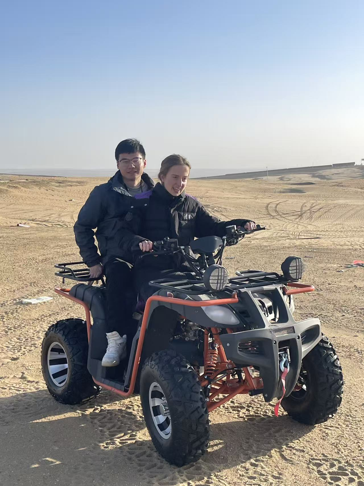

Day 11
Arrival in Ordos
We took an early flight to Ordos. From above, it was cool to see the landscape transform from flat land to mountainous. Entering Ordos, the airport was relatively empty, and the town didn’t seem too full. But let me introduce you to it:
- Ordos has the biggest GDP of any city in China
- Ordos is the 3rd largest city in China by area, but only has a population of around 1 million people
- Ordos has one third of China’s coal
- Ordos is situated at the feet of the mountains, and is surrounded by dessert, making it favorable for both wind and solar energy
Solar Panels

We visited the largest pattterened solar field in the whole world in the Kubuqi desert. The field is set out to have the pattern of a horse. We were able to go up several observation towers, but even going up to the top of the talles one, it was not possible to discern any part of the horse.

It was very impressive to imagine the amount of power being produced, standing up there and not being able to see the end of all the infrastructure. There seemed to be multiple projects all around the area. The gentleman who took us up the observation tower told us that his company also had a 40 GW project nearby. That is equivalent to the entire US grid storage capacity. But this is contained in just a single solar PV project in China. From an American perspective, it was quite a shocking realization.
We then also decided to inspect the PV panels up close. There was snow on the ground, but during the summer, the land under the solar panels is used for agricultural purposes becuase the solar panels provide shade for the crops. Otherwise, the intensity of the sun would be too strong. At the backs of the panels, we looked at the electrical connections and determined that the ones we were looking at were not turned on at the time.
Desert
Later in the desert, we took a quick stop at a Quad bike rental place. It was my first time ever doing something like that.
Both Vanessa and Mr. Gu got stuck in the sand at one point. In trying to get out, they accelerated their back wheels and made sand fly over them. Because they were both facing forward at the time, neither of them realized, and the sand was flying over their heads. It was very funny to watch.

We then went on driving back through the desert landscape. It was beautiful. Other than the piles of sand, there was also bright red rock and some greenery. Once we arrived in an area closer to windmills, we decided to try to drive to their base and inspect them up close. We got to the base of one of the windmills, and it was really interesting to see how they were built. The shape- especially of the blades- was unqiue and intentionally designed. It was very loud standing right next to the moving blades, simply because of the amount of wind each wind was pushing past. This view once again gave an impression of how large-scale the energy industry is in China.

By the end of the day, I had seen the following energy infrastructure:
- Solar panels
- Windmills
- The HydoTech testbench
- Coal mines from the airplane
- A dam from the airplane
I am so grateful to have had the opportunity to see all of this in person, and to have a better understanding of the scale of the industry in China.

Dinner
We headed back to Ordos for dinner. The city was now dark, but lit up on every building by some light decorations. From this perspective, it was more easy to see and understand that Ordos is such a wealthy city. For dinner, we went to a Mongolian barbeque spot with Mr. Gu’s colleague (I believe Mr. Ma). We sat down in a tent-like spot and got served different types of meat and yogurt products. Mr. Ma also brought a few traditional Mongolian snacks. I really enjoyed this meal- all the yogurt tasted great and all the meat was very flavorful.

Finally, then, we headed to the hotel. Mr. Gu had to leave for a flight back to Nanjing. We drove along the river to the other side of the city. We had been out the whole day and only settled down around 11 PM. The hotel was grand in every way. We woke up early the next morning to head back to Nanjing.